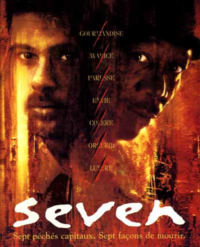
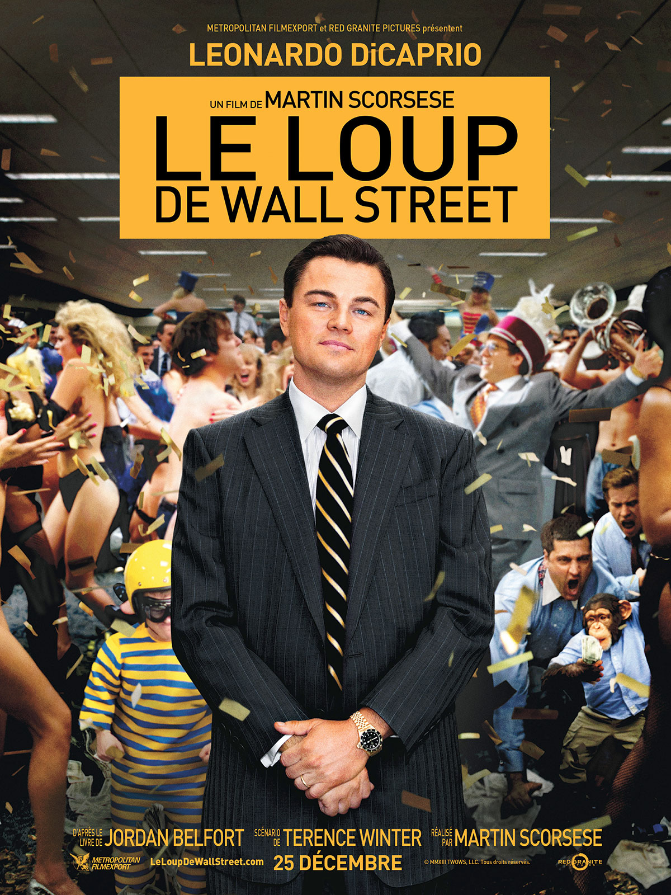

Thomas Hunckler
Etudiant au Wagon
Après des études de comptabilité qui n'étaient pas du tout mon truc. Des études de marketing, intéressantes mais limité et un master en e-marketing, je suis en voie de devenir un futur prochain développeur fullstack.
My Favorite movies
 |
Interstellar |
|
Le film raconte les aventures d’un groupe d’explorateurs qui utilisent une faille récemment découverte dans l’espace-temps afin de repousser les limites humaines et partir à la conquête des distances astronomiques dans un voyage interstellaire. |
|  | Seven |
|
Pour conclure sa carrière, l'inspecteur Somerset, vieux flic blasé, tombe à sept jours de la retraite sur un criminel peu ordinaire. John Doe, c'est ainsi que se fait appeler l'assassin, a decidé de nettoyer la societé des maux qui la rongent en commettant sept meurtres basés sur les sept pechés capitaux: la gourmandise, l'avarice, la paresse, l'orgueil, la luxure, l'envie et la colère. |
|  | Le Loup de Wall Street |
|
L’argent. Le pouvoir. Les femmes. La drogue. Les tentations étaient là, à portée de main, et les autorités n’avaient aucune prise. Aux yeux de Jordan et de sa meute, la modestie était devenue complètement inutile. Trop n’était jamais assez… |
This page has been coded during the FullStack program @LeWagon. That was probably the best experience of my entire life.